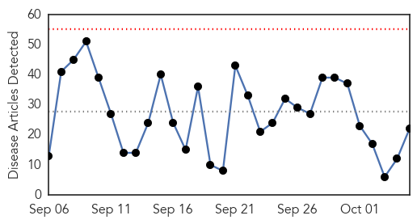
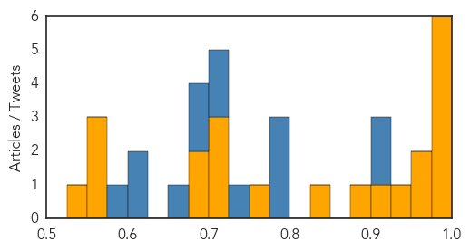
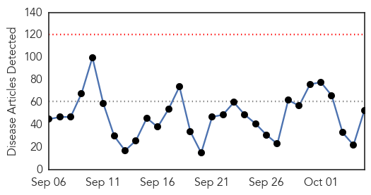
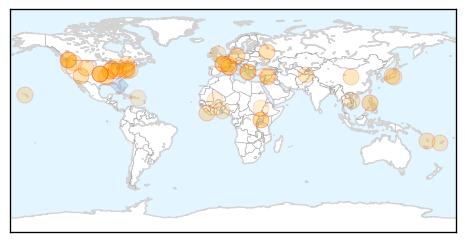

Ebola
30-Day Web Trend
0 alerts, 0 warnings

30-Day Twitter Trend
0 alerts, 0 warnings

Article Locations

Article Confidences
Top Articles:
- 1.000
- State of emergency declared in Liberia,Sierra Leone after Ebola outbreak, as Schools closed, villages quarantined,epidemic claims over 700 lives across 3 west African nations
- 0.999
- Statement on the 7th meeting of the IHR Emergency Committee regarding the Ebola outbreak in West Africa
- 0.999
- Lessons Learned from Ebola Shared at Consortium Symposium
- 0.999
- Liberia declared Ebola-free after weeks of no cases
- 0.992
- Dedicating Emergency Operations Centers in West Africa
- 0.988
- Ebola is still a PHEIC
- 0.968
- New centers help health workers fight deadly infections
- 0.966
- Liberia Receives EU Ebola Delegation; Lauds Partners In Progress Against Ebola
- 0.926
- Rethinking the Ebola response: How Liberians helped themselves
- 0.923
- News in Brief 05 October 2015 (AM)
- 0.888
- CANR to host lecture on pathogen research by NIH's Kindrachuk
- 0.838
- UI receives $2.2 million and is named Prevention Epicenter by CDC
- 0.774
- We Have Come a Long Way – President Koroma Tells UN Envoy
- 0.719
- Sierra Leone Telegraph
- 0.705
- Midwifery Curriculum Review Meeting ends in Freetown
- 0.704
- CDC awards Emory $2.2 million grant to prevent spread of infectious diseases, including Ebola, in health care facilities
- 0.681
- Experiments on Chimps
- 0.675
- AUC Chairman on five day working visit to Cuba
- 0.570
- Afghanistan: Kunduz bombing latest
- 0.557
- Gupta: Epidemic of gun violence is treatable
- 0.551
- U.S. Government Implements the New ICD-10 Which May Increase Medical Bills
- 0.535
- Video feature: Princeton-Fung Global Forum to focus on lessons from the Ebola crisis
Top Tweets:
- 0.906
- RT: WHO's ebola emergency committee met last week and says outbreak developments stil a public health emergency 1/2 http:…
- 0.903
- WHO Committee Says Ebola Remains a Public Health Emergency of International ... - Infection Control Today http://t.co/np2X17cped ebola EVD
- 0.790
- Liberia. Fistula Cases Spiked Due To Ebola Outbreak http://t.co/KYyPqiDFCl
- 0.789
- Asian Ebola virus active in almost all states says NIV study - The Indian Express http://t.co/VLtbuRK9Es ebola EVD
- 0.789
- Asian Ebola virus active in almost all states says NIV study - The Indian Express http://t.co/H0DjCoOlEC ebola EVD
- 0.735
- 's role in Ebola outbreak was pivotal applying Nigeria lessons and boosting health worker capacity
- 0.713
- Rethinking the Ebola response: How Liberians helped themselves - Devex http://t.co/KQftjQQTIu ebola EVD
- 0.709
- Liberia. Controlling the last known cluster of Ebola Virus Disease http://t.co/8IEAn5gUJM
- 0.699
- RT: Ebola tweet chat HWForum h…
- 0.699
- RT: Ebola tweet chat HWForum h…
- 0.663
- After Ebola global health experts say crisis is the new normal - EurActiv http://t.co/GJwm9h8rch ebola EVD
- 0.624
- RT: Nigeria's Ebola control plan was adopted by other African countries & beyond @EbolaAlert @_African U…
- 0.619
- RT: 2/2 Per WHO's ebola emergency committee statement 34 countries still have trade or travel restrictions negatively im…
- 0.581
- WHO Committee Says Ebola Remains a Public Health Emergency of International ... - Infection Control Today http://t.co/EH6KGqUzFR
Unknown
30-Day Web Trend
0 alerts, 0 warnings

30-Day Twitter Trend
1 alerts, 0 warnings

Article Locations
Article Confidences

Top Articles:
- 0.994
- Van Buren County Health Unit Giving Flu Vaccines on Oct. 30
- 0.979
- Flu vaccine expected to protect people more this year
- 0.954
- Grand Canyon visitor tests positive for rare tick-borne relapsing fever
- 0.939
- 3 more linked to Saudi tested for MERS
- 0.935
- Dayton Children’s records first case of flu
- 0.924
- Small number of Wallingford students diagnosed with hand, foot and mouth disease
- 0.917
- Rare Human Rabies Case Confirmed In Fremont County
- 0.897
- Worcester County Schedules Flu Vaccination Clinics
- 0.866
- Turkey says Russian warplane violated its airspace
- 0.785
- The deadly bacteria that killed 12 New Yorkers is back in the places the city disinfected
- 0.783
- Lawsuit Filed Against Fig & Olive Restaurant for Salmonella Illness
- 0.762
- Viral Deer Disease Kills Hundreds In Washington & Idaho
- 0.758
- Children and El Niño - World
- 0.757
- City of Ottawa recommends flu vaccination despite last year's ineffectivess
- 0.750
- 40,000 Medical Doctors Needed To Strengthen Liberia’s Health Sector-Dr Ireland
- 0.749
- Centre’s steps to curb encephalitis menace pay off
- 0.736
- Royal Caribbean cruise leaves 600 people ill
- 0.732
- Tackling next challenge in HIV
- 0.721
- Star Princess sees 2nd norovirus outbreak of 2015
- 0.713
- The Tools to Fight H.I.V.
- 0.707
- France 24 extends its distribution in Indonesia
- 0.707
- NATO condemns Russian violation of Turkish airspace
- 0.707
- Ministers reach deal on 12-nation Pacific trade pact
- 0.707
- Islamic State group blow up 2,000-year-old Arch of Triumph in Syria's Palmyra
- 0.707
- Iraqi PM opens Baghdad's fortified Green Zone to the public
- 0.707
- Last missing person from French Riviera flash floods found alive
- 0.707
- Four still missing after deadly flash floods strike French Riviera
- 0.707
- Air France staff stage ‘violent’ protest at planned job cuts
- 0.707
- Pentagon says deadly Kunduz air strike requested by Afghans
- 0.707
- The forgotten alliance: Serbia's Great War monument to France
- 0.707
- The forgotten alliance: Serbia's Great War monument to France
- 0.691
- Norovirus Outbreak On Princess Cruise Ship: Norovirus Outbreak Hits Star Princess Passengers On 15-Day Hawaiian Cruise
- 0.676
- Study examines incidence of serious, highly drug-resistant group of bacteria
- 0.673
- Families warn of sudden, deadly threat of sepsis
- 0.670
- Medical professionals trained in refugee and migrant health in the former Yugoslav Republic of Macedonia
- 0.665
- Second Norovirus Outbreak on Star Princess
- 0.657
- Lyme Disease Guidelines Panelists Engage in Coordinated Propaganda Campaign
- 0.650
- Fiji's First Community Newspaper
- 0.621
- Fiji Times Online
- 0.595
- Shortcomings identified in new reporting system into hospital deaths
- 0.591
- Hand Foot and Mouth Disease
- 0.579
- Lack of Legionella protocol frustrates U-46 leader
- 0.574
- New Case Of Mad Cow Disease Found On Farm In The UK
- 0.574
- West African countries share anthrax prevention efforts
- 0.569
- Portmore schools affected by Hand, Foot and Mouth disease reopen
- 0.566
- Public's help sought in hoof disease fight
- 0.564
- Dozens Of Star Princess Passengers Sickened By Stomach Bug
- 0.541
- Prescriptions for Health: Get screened for colon cancer
- 0.514
- Simplified health messages developed for Ugandans
- 0.511
- Don't Shoot the Ambulance: Medicine in the Crossfire
Showing top 50 articles...
Top Tweets:
- 0.581
- RT: FLU SCAN: Flu vaccine and pneumonia; Avian flu in Taiwan Vietnam http://t.co/ajZBkNDfAZ H5N6 H5N2